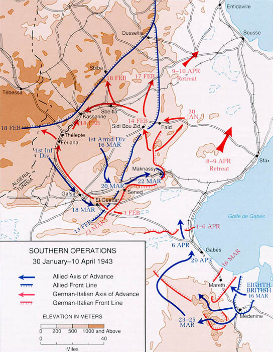

Campaña de Túnez
La última resistencia del Eje en el continente africano, que incluyó la dura batalla del paso de Kasserine y culminó con una rendición masiva comparable a la de Stalingrado.
Datos
| Fechas | 17 de noviembre de 1942 – 13 de mayo de 1943 |
|---|---|
| Lugar | Túnez |
| Resultado | Victoria aliada decisiva; rendición del Eje en África |
| Bando aliado | Estados Unidos, Reino Unido y la Francia Libre |
| Bando del Eje | Alemania e Italia |
| Comandantes | Dwight Eisenhower, Harold Alexander, Bernard Montgomery, George Patton (Aliados); Erwin Rommel, Hans-Jürgen von Arnim (Eje) |
| Prisioneros del Eje | En torno a un cuarto de millón de soldados (la "Tunisgrad") |
Bando aliado
Bando del Eje
Introducción
Atrapado entre el Octavo Ejército británico que avanzaba desde el este tras El Alamein y las fuerzas de la Operación Torch que llegaban desde el oeste, el Eje se replegó a Túnez, donde estableció una cabeza de puente y recibió refuerzos apresurados. Allí se libró la batalla final por el Norte de África.
Razones
- Ganar tiempo: Hitler y Mussolini decidieron defender Túnez a toda costa para retrasar la invasión aliada de Europa por el sur.
- Proteger Italia: mantener a los Aliados lejos de Sicilia y de la península italiana.
- Para los Aliados: destruir por completo a las fuerzas del Eje en África y asegurar el trampolín hacia Europa.
Cuerpo (desarrollo)
En febrero de 1943, Rommel asestó un duro golpe a las inexpertas tropas estadounidenses en el paso de Kasserine, su primer gran choque con los alemanes, que se saldó con una dolorosa derrota inicial para Estados Unidos. Sin embargo, los estadounidenses aprendieron rápido: reorganizados bajo el mando de George Patton y Omar Bradley, se recuperaron y endurecieron.
Con una superioridad aérea, naval y material aplastante, los Aliados fueron cerrando el cerco. La Marina y la aviación aliadas estrangularon los suministros del Eje a través del Mediterráneo. En mayo de 1943, la ofensiva final tomó Túnez y Bizerta, y las fuerzas del Eje, sin municiones ni combustible ni posibilidad de evacuación, se rindieron en masa el 13 de mayo. Rommel ya había sido evacuado por enfermedad semanas antes.

Mapa de la fase final de la campaña de Túnez (enero–abril de 1943), Wikimedia Commons. Leyenda original en inglés.
Conclusión
La caída de Túnez puso fin a tres años de guerra en el Norte de África con una victoria aliada total. La rendición de en torno a un cuarto de millón de soldados del Eje fue un desastre de una magnitud comparable a la de Stalingrado, por lo que se la apodó a veces la "Tunisgrad".
- Expulsó por completo al Eje del continente africano.
- Aseguró el Mediterráneo y abrió la puerta a la invasión de Sicilia e Italia, el siguiente paso aliado.
- Curtió a las tropas y a los mandos estadounidenses, que aplicarían lo aprendido en las campañas siguientes.
Curiosidades
- Kasserine, una lección dura: la derrota inicial estadounidense llevó a relevos de mando y a profundas reformas en el ejército de EE. UU., que salió reforzado.
- "Tunisgrad": el número de prisioneros del Eje fue tan alto que la prensa aliada comparó el desastre con Stalingrado.
- Rommel se marcha: el "Zorro del Desierto" abandonó África enfermo antes del final, sin presenciar la capitulación de su antiguo ejército.
Teorías
Debates e interpretaciones historiográficas, presentados como tales:
- ¿Por qué defender Túnez? Muchos historiadores consideran un error del Eje volcar tantas tropas y recursos en una cabeza de puente insostenible, condenándolos a la captura, en lugar de evacuar a tiempo.
- El valor de Kasserine: se debate si la derrota estadounidense se debió a la inexperiencia, a un mando deficiente o a la superioridad táctica alemana, y cuánto influyó en la mejora posterior del ejército de EE. UU.